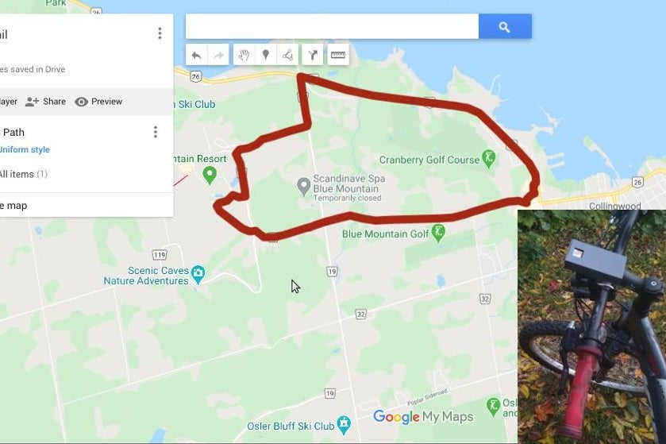
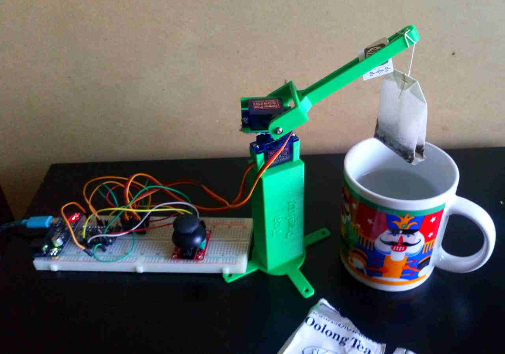
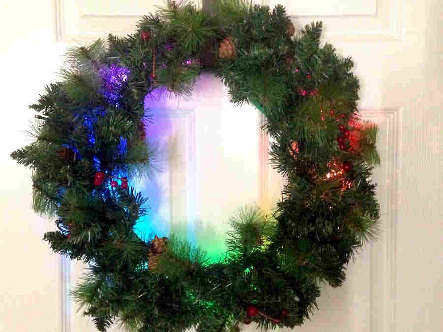
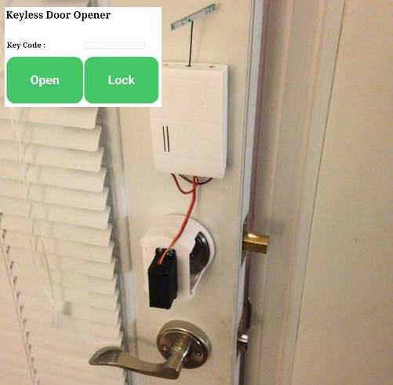
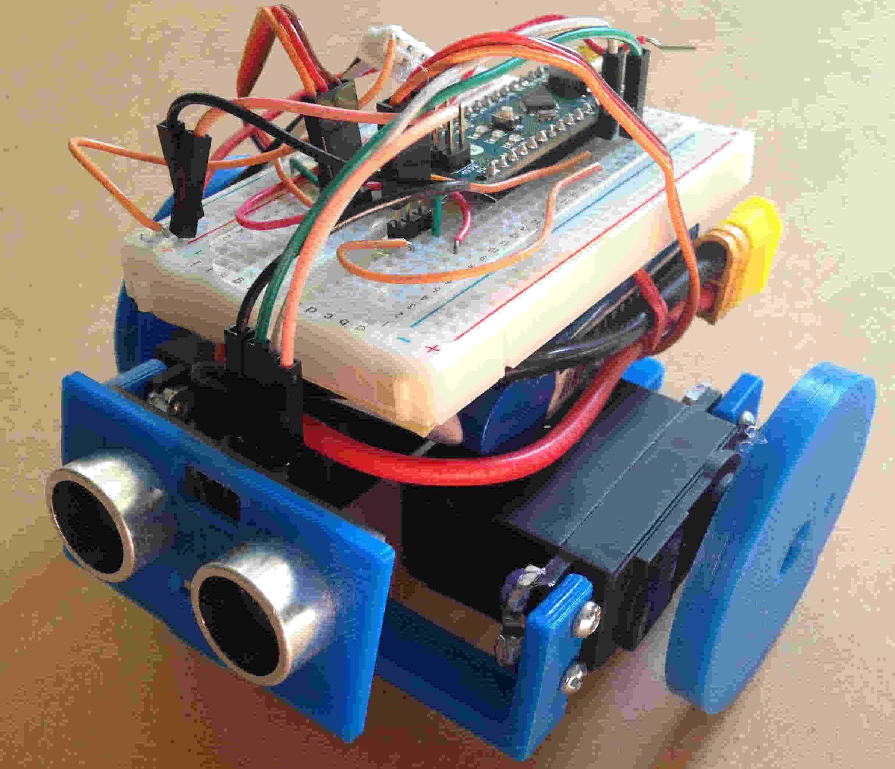
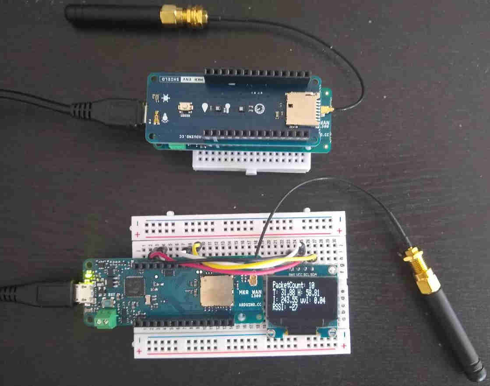

Bike GPS Trail Mapper
GPS data logger to keep track of all your treks/bike rides.To complete build you will need an GPS receiver module, a Arduino based micro-controller with serial interface and a Lipo battery.
We are using Adafruit's Flora as the micro-controller and Flora GPS.

Automated Tea Dunker
This is a fun little project using a Arduino Pro Mini, two hobby 9G micro servos and thumb joystick, to get you started with using servos with the Arduino.

Christmas Wreath Automation
This is a great way to modify and add that extra wow! factor to your christmas holiday wreath that hangs outside your front door. Here we are using an Arduino MKR1000, NeoPixels, and a buzzer.
And we also get notified via SMS/email when someone is at the door. Also add a piezo buzzer to play your favorite holiday tune. Add a PIR sensor to detect motion in front of the door, this will trigger the NeoPixels on the wreath and play a tune.

Keyless Door Entry
Use the Arduino based LinkIt ONE board to make a Keyless door entry system, which opens via a web app on your smart phone with a secret KeyCode.

Continuous Servo Bot
This is a great way to start with robotics,for the brain of the bot, we are using an Arduino Nano, 3D printed parts to hold the servo's and Ultrasonic sensors,
and to power it up we are using a 2 cell Lipo battery.

Arduino MKR WAN 1300 + ENV Sensor Shield
Want to learn about LoRa techonology, this is a great place to start.LoRa encodes information on radio waves using chirp pulses - similar to the way dolphins and bats communicate! LoRa modulated transmission is robust against disturbances
and can be received across great distances.
In addition also check out the Arduino MKR Enviroment shield, which can be used to get the measure atmospheric pressure,
temperature, humidity, UVa intensity, UVb intensity, UV Index and light intensity